IO751 Usage Notes
IO751 Usage Notes — Usage information about the I/O module
Description
This section provides further information on how to configure the IO751 PROFINET Controller module.
SYCON.net
During initialization of the real-time application, the IO751 Setup block reads a configuration file from the hard drive of the target machine and configures the PROFINET Controller protocol stack. Use the SYCON.net configuration tool to create such a file.
![[Tip]](images/tip.png) | Tip |
|---|---|
Download the SYCON.net configuration tool from the Speedgoat Customer Portal. Login to your Speedgoat account. In the Downloads section, navigate to Software and click SYCON.net (v1.500 Build 231214). |
I/O Module Configuration for Unsynchronized Communication (RT)
In addition to this short introduction, please read the SYCON.net help documentation for detailed information about how to set up a PROFINET network and export the module configuration file.
Open SYCON.net and create a new project
In the right window, select the Fieldbus tab, navigate to PROFINET IO > Master, select the CIFX RE/PNM V3 item and drag it to the bus line in the Network View window
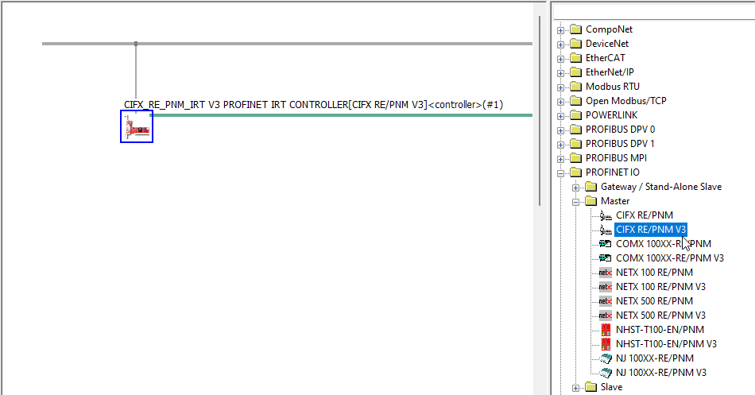
In the main menu bar, navigate to Network and click Import Device Descriptions. Select the PROFINET GSDML (*.xml) files of the devices in your PROFINET network
In the right window, select the Fieldbus tab, navigate to PROFINET > Slave, select the device you want to add and drag it to the controller bus line in the Network View window. Repeat this step for all devices connected with the IO751 module
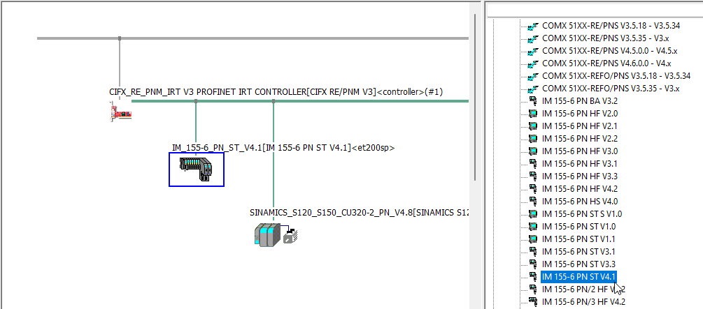
Double-click the device node in the Network View window, navigate to Configuration > Modules and use the Add Module and Add Submodule buttons to add the modules and submodules the GSDML provides to the slots and subslots of the device. The modules configuration must match the configuration of the real device. Repeat this step for all PROFINET device nodes
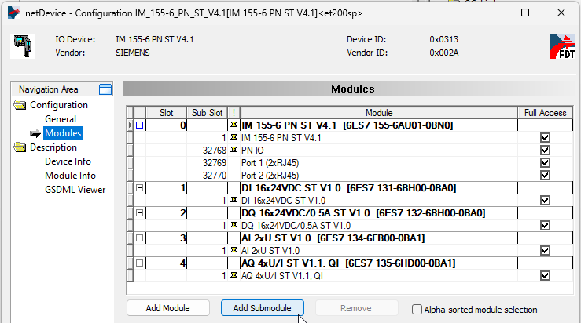
Double-click the controller node in the Network View window, navigate to Controller Network Settings and change the IP Settings for the controller if required. During runtime, the PROFINET controller searches the configured PROFINET devices by name and assigns automatically generated IP addresses to the devices found. The IP address generation is based on the controller's IP address entered in the IP Settings menu
In the left-hand navigation, click Device Table. In the Name of station column, enter the names of the PROFINET devices connected with the module. If unknown, use a scanner tool such as PRONETA to obtain the station names
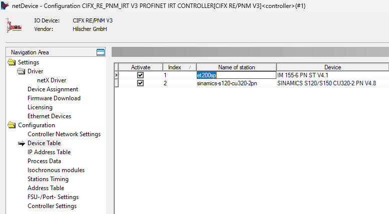
In the left-hand navigation, click IP Address Table. In the Mode column, select Inherit(Standard) for each device and do not change the IP addresses
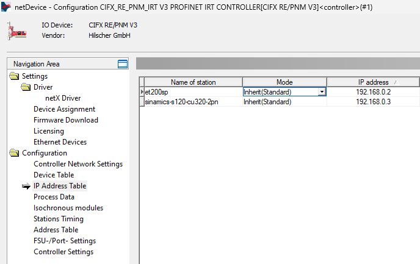
In the left-hand navigation, click Stations Timing. In the RT mode column, select Unsynchronized (RT) for all devices. Specify the Updating time for each device in the range 1 to 512 milliseconds and leave the automatically calculated Watchdog time. The Updating time is the interval between two cyclic frames sent from the controller to the device (applies to the frames sent from the device to the controller as well)
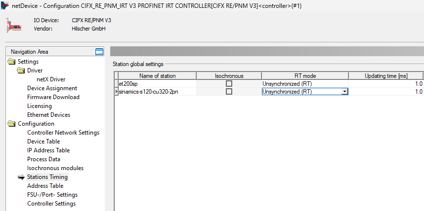
In the left-hand navigation, click Controller Settings. Use the Start of bus communication parameter to determine when the module should start the communication with the connected devices
Automatically by device: The I/O module starts the communication immediately after the initialization of the real-time application on the target. The communication is maintained even if the real-time application stops
Controlled by application: After the initialization of the real-time application on the target (model download), the communication of the I/O module with the network is off. The device starts the communication when the real-time application starts. The device stops the communication when the real-time application stops
Click the Apply button, close the window, and save the project
Right-click the controller node in the Network View window, navigate to Additional Functions > Export and click DBM/nxd. Save the file to a destination of your choice. Paste the path in the Configuration File parameter of the IO751 Setup block
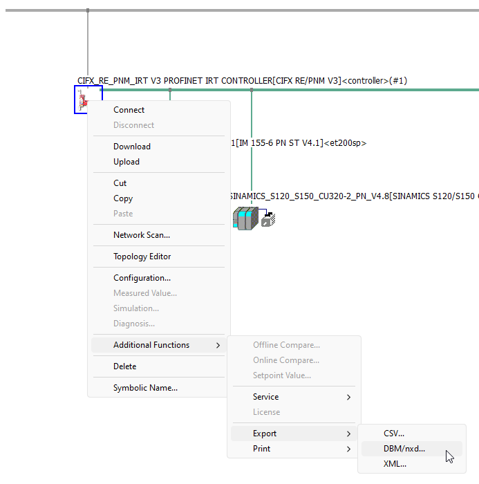
I/O Module Configuration for Synchronized Communication (IRT)
To enable synchronized communication, further parameters must be set in addition to the basic configuration described in the previous section. In IRT mode, the PROFINET devices are synchronized with the network clock driven by the sync master (the PROFINET controller). This enables the synchronization between the application running on the PROFINET controller and the applications running on the PROFINET devices. In addition, for devices which have isochronous submodules, a simultaneous acquisition of setpoints that originate from a specific cycle of the controller application can be achieved. IRT can only be activated for devices which are IRT-capable and whose GSDML files contain the necessary attributes. A mixed communication between RT and IRT is possible but requires special network switches.
Double-click the controller node in the Network View window and navigate to Stations Timing. In the RT mode column, select Synchronized (IRT) for the devices for which IRT communication should be activated. Enter the Basic send-clock in the range 0.25 to 4.0 ms and specify the Updating time for the IRT-enabled devices in the same range. The Updating Times of all devices must be a multiple of the Basic send-clock .
Isochronous mode is automatically selected if an IRT-capable submodule is activated in the Isochronous modules dialog
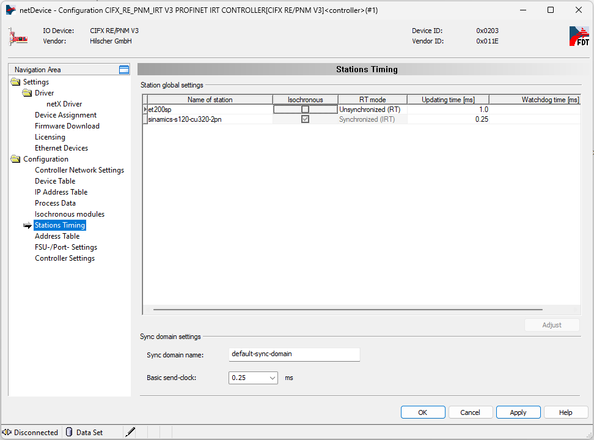
In the left-hand navigation, click Isochronous modules and select the submodules for which you want to activate isochronous data exchange
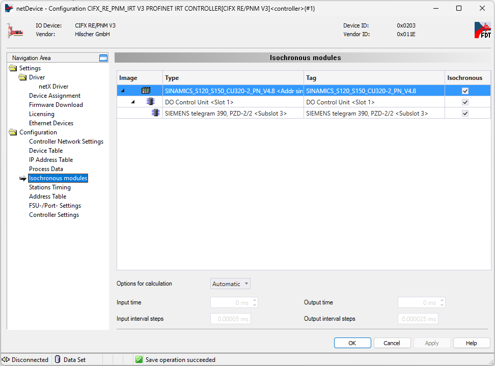
Switch to the Topology View tab at the bottom of the main window. In this view, connect the ports as per the real-world setup. Clicking on a connection opens the dialog for the cable length and delay time.
Click the controller tile and select the Synchronized (IRT) master for the Synchronization role in the parameter list on the right.
Select the Synchronized (IRT) slave for the IRT-enabled devices
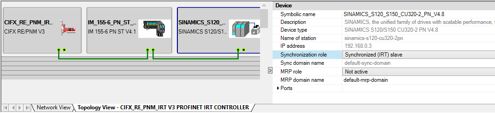
Export the configuration file as described in the previous section
To synchronize the real-time application running on the target machine with the base clock, place the related IO751 Send and Receive blocks in a function-call subsystem connected to an Interrupt Setup block. In the Interrupt Setup block, select the same Module ID as in the IO751 Setup block. Refer to the Utilities documentation for more information about this block
How to Use the IO751 Send and Receive Blocks
The IO751 module autonomously exchanges data with the connected devices based on the Updating Time defined in the Stations Timing dialog and the data items selected in the Modules dialog of the device nodes. The IO751 Send and Receive blocks access the process data the module shares with the real-time application. The Send block copies data from its input port to the module's output area (data sent to the remote devices), and the Receive block copies data from the input area to its output port (data received from the remote devices). The layout of both areas is available in the Address Table dialog.
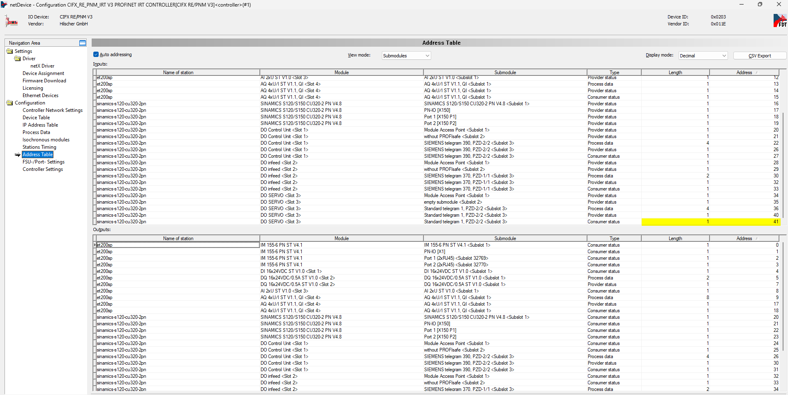
Inside both process data areas, the module arranges the data items consecutively according to the device order in the Device Table dialog. Each device and its data items are represented by specific offsets in the Address Table. The Send and Receive blocks copy a specific number of bytes from/to offset 0 of the respective area (inputs/outputs) according to the Number of Bytes parameter in the block mask. For the Receive block, best practice is to output the whole range of input data items and use Byte Unpacking blocks to extract the data. For this purpose, the Length and Offset columns show the lengths and offsets of the items. The overall number of bytes can be derived from the last row: total number of bytes = offset + length. Pass this number to the Number of Bytes parameter of the Receive block. In the screenshot above, the total number of input bytes is 42. The same applies to the Send block. Here, refer to the output area and use Byte Packing blocks to assemble the data to send.
The actual process data items have the Process Data type in the Type column. In addition, each submodule can feature consumer and provider status information, which indicates a low quality or a faulty status of the submodule. You can read and write this information in Simulink as well.
Front Plate Description
The IO751 acts as one PROFINET Controller exclusively. The two RJ45 connectors simply serve to build up a line-based network structure. Plug the cable from the previous PROFINET Device into the first socket. Connect the second socket with the next PROFINET Device. The LEDs described below indicate the communication status of the single PROFINET Controller.


LED Status Description
| SYS | SF/COM1 | BF/COM2 | Meaning |
| Off | Off | Off | Power supply for the device is missing or hardware defect |
| On, yellow | Off | Off | No second stage bootloader found in Flash memory |
| Flashing green/yellow, cyclic | Off | Off | No firmware file found in Flash file system |
| On, green | On, red | Off | PROFINET IO Controller is not configured |
| On, green | Off | On, red |
No Ethernet port has a link. E.g., no cable connected to any of the Ethernet ports |
| On, green | Off | Flashing, red, 2 Hz | PROFINET IO Controller is not online (Bus is switched to Off) |
| On, green | Off or On, red | Flashing, 1 Hz | Not all configured devices are in data exchange |
| On, green | On, red | - |
One IO Device connected to the PROFINET IO Controller reports a problem |
| On, green | Off | Off |
All devices are in data exchange and no problem has been reported by any device |
| On, green | Flashing, red, 1 Hz, 3 s | Off |
A PROFINET DCP Set Signal has been received |
| On, green | Flashing, red, 2 Hz | Flashing, red, 2 Hz |
The PROFINET IO Controller has detected an address conflict. Another device in the network is using the same Name of Station or IP address as the PROFINET IO Controller Or Watchdog error |
| On, green | On, red |
On, red |
No valid Master license |
Note that only the IO751 PCI and PCIe modules have the SYS LED. This LED does not feature on the IO751 mPCIe module.
Protocol Stack Status Codes
For the list of status codes, please refer to the Status Codes for Protocols Supported with the IO64x/IO75x Modules.
PROFINET Status Codes
Status codes defined by the PROFINET protocol standard and used by the IO751 Record Read and Write blocks. The status code is structured into four bytes:
Byte 1
This field defines the domain in which the error occurred.
Code Use Description 0x20 - 0x3F Manufacturer-specific: for Log Book To be used when the application generates a log book entry. Meaning of the values is manufacturer-specific (Defined by manufacturer of the device.) 0x81 PNIO: for all errors not covered elsewhere Used for all errors not covered by the other domains 0xCF RTA error: used in RTA error PDUs Used in alarm error telegrams (Low Level) 0xDA AlarmAck: used in RTA data PDUs Used in alarm data telegrams (High Level) 0xDB IODConnectRes: RPC Connect Response Used to indicate errors that occurred when handling a Connect request. 0xDC IODReleaseRes: RPC Release Response Used to indicate errors that occurred when handling a Release request. 0xDD IODControlRes: RPC Control Response Used to indicate errors that occurred when handling a Control request 0xDE IODReadRes: RPC Read Response Used to indicate errors that occurred when handling a Read request 0xDF IODWriteRes: RPC Write Response Used to indicate error occurred when handling a Write response Byte 2
This field defines the context in which the error occurred.
Code Use Description 0x80 PNIORW: Application errors of the services Read and Write Used in the context of Read and Write services handled by either the PROFINET Device stack or by the Application 0x81 PNIO: Other Services Used in context with any other services 0x82 Manufacturer-Specific: LogBook Entries Used in context with LogBook entries generated by the stack or by the application Byte3 and Byte4 in case of Byte2 == PNIORW
If Byte2 is set to PNIORW, Byte4 is encoded user-specific and Byte3 is split into an error class nibble and a nibble holding the actual error code.
Class (Bit 7-4) Meaning Error (Bit 3-0) Meaning 0xA Application 0x0 Read Error 0x1 Write Error 0x2 Module Failure 0x7 Busy 0x8 Version Conflict 0x9 Feature Not Supported 0xA-0xF User-specific 0xB Access 0x0 Invalid Index 0x1 Write Length Error 0x2 Invalid Slot/Subslot 0x3 Type Conflict 0x4 Invalid Area/Api 0x5 State Conflict 0x6 Access Denied 0x7 Invalid Range 0x8 Invalid Parameter 0x9 Invalid Type 0xA Backup 0xB-0xF User-specific 0xC Resource 0x0 Read Constrain Conflict 0x1 Write Constrain Conflict 0x2 Resource Busy 0x3 Resource Unavailable 0x8-0xF User-specific 0xD-0xF User-specific 0x0-0xF User-specific Byte3 and Byte4 in case of Byte2 == PNIO
The meaning of Byte3 and Byte4 for Byte2 = PNIO is shown in the following table.
Byte3 Meaning Byte4 Meaning 0x01 Connect Parameter Error. Faulty ARBlockReq 0x00-0x0D Error in one of the Block Parameters 0x02 Connect Parameter Error. Faulty IOCRBlockReq 0x00-0x1C Error in one of the Block Parameters 0x03 Connect Parameter Error. Faulty ExpectedSubmoduleBlockReq 0x00-0x10 Error in one of the Block Parameters 0x04 Connect Parameter Error. Faulty AlarmCRBlockReq 0x00-0x0F Error in one of the Block Parameters 0x05 Connect Parameter Error. Faulty PrmServerBlockReq 0x00-0x08 Error in one of the Block Parameters 0x06 Connect Parameter Error. Faulty MCRBlockReq 0x00-0x08 Error in one of the Block Parameters 0x07 Connect Parameter Error. Faulty ARRPCBlockReq 0x00-0x04 Error in one of the Block Parameters 0x08 Read Write Record Parameter Error. Faulty Record 0x00-0x0C Error in one of the Block Parameters 0x09 Connect Parameter Error Faulty IRInfoBlock 0x00-0x05 Error in one of the Block Parameters 0x0A Connect Parameter Error Faulty SRInfoBlock 0x00-0x05 Error in one of the Block Parameters 0x0B Connect Parameter Error Faulty ARFSUBlock 0x00-0x05 Error in one of the Block Parameters 0x14 IODControl Parameter Error. Faulty ControlBlockConnect 0x00-0x09 Error in one of the Block Parameters 0x15 IODControl Parameter Error. Faulty ControlBlockPlug 0x00-0x09 Error in one of the Block Parameters 0x16 IOXControl Parameter Error. Faulty ControlBlock after a connection establishment 0x00-0x07 Error in one of the Block Parameters 0x17 IOXControl Parameter Error. Faulty ControlBlock a plug alarm 0x00-0x07 Error in one of the Block Parameters 0x18 IODControl Parameter Error Faulty ControlBlockPrmBegin 0x00-0x09 Error in one of the Block Parameters 0x19 IODControl Parameter Error Faulty SubmoduleListBlock 0x00-0x07 Error in one of the Block Parameters 0x28 Release Parameter Error. Faulty ReleaseBlock 0x00-0x07 Error in one of the Block Parameters 0x32 Response Parameter Error. Faulty ARBlockRes 0x00-0x08 Error in one of the Block Parameters 0x33 Response Parameter Error. Faulty IOCRBlockRes 0x00-0x06 Error in one of the Block Parameters 0x34 Response Parameter Error. Faulty AlarmCRBlockRes 0x00-0x06 Error in one of the Block Parameters 0x35 Response Parameter Error. Faulty ModuleDiffBlock 0x00-0x0D Error in one of the Block Parameters 0x36 Response Parameter Error. Faulty ARRPCBlockRes 0x00-0x04 Error in one of the Block Parameters 0x37 Response Parameter Error Faulty ARServerBlockRes 0x00-0x05 Error in one of the Block Parameters 0x3C AlarmAck Error Codes 0x00 Alarm Type Not Supported 0x01 Wrong Submodule State 0x3D CMDEV 0x00 State conflict 0x01 Resource 0x02-0xFF State machine specific 0x3E CMCTL 0x00 State conflict 0x01 Timeout 0x02 No data send 0x3F CTLDINA 0x00 No DCP active 0x01 DNS Unknown_RealStationName 0x02 DCP No_RealStationName 0x03 DCP Multiple_RealStationName 0x04 DCP No_StationName 0x05 No_IP_Addr 0x06 DCP_Set_Error 0x40 CMRPC 0x00 ArgsLength invalid 0x01 Unknown Blocks 0x02 IOCR Missing 0x03 Wrong AlarmCRBlock count 0x04 Out of AR Resources 0x05 AR UUID Unknown 0x06 State conflict 0x07 Out of Provider, Consumer or Alarm Resources 0x08 Out of memory 0x09 PDev already owned 0x0A ARset State conflict during connection establishment 0x0B ARset Parameter conflict during connection establishment 0x41 ALPMI 0x00 Invalid state 0x01 Wrong ACK-PDU 0x42 ALPMR 0x00 Invalid state 0x01 Wrong Notification PDU 0x43 LMPM 0x00–0xFF Ethernet Switch Errors 0x44 MAC 0x00-0xFF 0x45 RPC 0x01 CLRPC_ERR_REJECTED: EPM or Server rejected the call. 0x02 CLRPC_ERR_FAULTED: Server had fault while executing the call 0x03 CLRPC_ERR_TIMEOUT: EPM or Server did not respond 0x04 CLRPC_ERR_IN_ARGS; Broadcast or maybe “ndr_data” too large 0x05 CLRPC_ERR_OUT_ARGS: Server sent back more than “alloc_len” 0x06 CLRPC_ERR_DECODE: Result of EPM Lookup could not be decoded 0x07 CLRPC_ERR_PNIO_OUT_ARGS: Out-args not “PN IO signature”, too short or inconsistent 0x08 CLRPC_ERR_PNIO_APP_TIMEOUT: RPC call was terminated after RPC application timeout 0x46 APMR 0x00 Invalid state 0x01 LMPM signaled an error 0x47 APMS 0x00 Invalid state 0x01 LMPM signaled an error 0x02 Timeout 0x48 CPM 0x00 Invalid state 0x49 PPM 0x00 Invalid state 0x4A DCPUCS 0x00 Invalid state 0x01 LMPM signaled an error 0x02 Timeout 0x4B DCPUCR 0x00 Invalid state 0x01 LMPM signaled an error 0x4C DCPMCS 0x00 Invalid state 0x01 LMPM signaled an error 0x4D DCPMCR 0x00 Invalid state 0x01 LMPM signaled an error 0x4E FSPM 0x00-0xFF FAL Service Protocol Machine error 0x64 CTLSM 0x00 Invalid state 0x01 CTLSM signaled error 0x65 CTLRDI 0x00 Invalid state 0x01 CTLRDI signaled an error 0x66 CTLRDR 0x00 Invalid state 0x01 CTLRDR signaled an error 0x67 CTLWRI 0x00 Invalid state 0x01 CTLWRI signaled an error 0x68 CTLWRR 0x00 Invalid State 0x01 CTLWRR signaled an error 0x69 CTLIO 0x00 Invalid state 0x01 CTLIO signaled an error 0x6A CTLSU 0x00 Invalid state 0x01 AR add provider or consumer failed 0x02 AR alarm-open failed 0x03 AR alarm-ack-send 0x04 AR alarm-send 0x05 AR alarm-ind 0x6B CTLRPC 0x00 Invalid state 0x01 CTLRPC signaled an error 0x6C CTLPBE 0x00 Invalid state 0x01 CTLPBE signaled an error 0xC8 CMSM 0x00 Invalid state 0x01 CMSM signaled an error 0xCA CMRDR 0x00 Invalid state 0x01 CMRDR signaled an error 0xCC CMWRR 0x00 Invalid state 0x01 AR is not in state Primary. (Write not allowed) 0x02 CMWRR signaled an error 0xCD CMIO 0x00 Invalid state 0x01 CMIO signaled an error 0xCE CMSU 0x00 Invalid state 0x01 AR add provider or consumer failed 0x02 AR alarm-open failed 0x03 AR alarm-send 0x04 AR alam-ack-send 0x05 AR alarm-ind 0xD0 CMINA 0x00 Invalid state 0x01 CMINA signaled an error 0xD1 CMPBE 0x00 Invalid state 0x01 CMPBE signaled an error 0xD2 CMDMC 0x00 Invalid state 0x01 CMDMC signaled an error 0xFD Used by RTA for protocol error (RTA_ERR_CLS_PROTOCOL) 0x00 Reserved 0x01 error within the coordination of sequence numbers (RTA_ERR_CODE_SEQ) 0x02 instance closed (RTA_ERR_ABORT) 0x03 AR out of memory (RTA_ERR_ABORT) 0x04 AR add provider or consumer failed (RTA_ERR_ABORT) 0x05 AR consumer DHT / WDT expired (RTA_ERR_ABORT) 0x06 AR cmi timeout (RTA_ERR_ABORT) 0x07 AR alarm-open failed (RTA_ERR_ABORT) 0x08 AR alarm-send.cnf(-) (RTA_ERR_ABORT) 0x09 AR alarm-ack- send.cnf(-) (RTA_ERR_ABORT) 0x0A AR alarm data too long (RTA_ERR_ABORT) 0x0B AR alarm.ind(err) (RTA_ERR_ABORT) 0x0C AR rpc-client call.cnf(-) (RTA_ERR_ABORT) 0x0D AR abort.req (RTA_ERR_ABORT) 0x0E AR re-run aborts existing (RTA_ERR_ABORT) 0x0F AR release.ind received (RTA_ERR_ABORT) 0x10 AR device deactivated (RTA_ERR_ABORT) 0x11 AR removed (RTA_ERR_ABORT) 0x12 AR protocol violation (RTA_ERR_ABORT) 0x13 AR name resolution error (RTA_ERR_ABORT) 0x14 AR RPC-Bind error (RTA_ERR_ABORT) 0x15 AR RPC-Connect error (RTA_ERR_ABORT) 0x16 AR RPC-Read error (RTA_ERR_ABORT) 0x17 AR RPC-Write error (RTA_ERR_ABORT) 0x18 AR RPC-Control error (RTA_ERR_ABORT) 0x19 AR forbidden pull or plug after check.rsp and before in- data.ind (RTA_ERR_ABORT) 0x1A AR AP removed (RTA_ERR_ABORT) 0x1B AR link down (RTA_ERR_ABORT) 0x1C AR could not register multicast-mac address (RTA_ERR_ABORT) 0x1D not synchronized (cannot start companion-ar) (RTA_ERR_ABORT) 0x1E wrong topology (cannot start companion-ar) (RTA_ERR_ABORT) 0x1F dcp, station-name changed (RTA_ERR_ABORT) 0x20 dcp, reset to factory-settings (RTA_ERR_ABORT) 0x21 cannot start companion-AR because a 0x8ipp submodule in the first AR... (RTA_ERR_ABORT) 0x22 no irdata record yet (RTA_ERR_ABORT) 0x23 PDEV (RTA_ERROR_ABORT) 0x24 PDEV, no port offers required speed / duplexity (RTA_ERR_ABORT) 0x25 IP-suite [of the IOC] changed by means of DCP set(IPParameter) or local engineering (RTA_ERR_ABORT) 0x26 IOCARSR RDHT expired (RTA_ERROR_ABORT) 0xC9 AR removed by reason of watchdog timeout in the Application task (RTA_ERROR_ABORT) 0xCA AR removed by reason of pool underflow in the Application task (RTA_ERROR_ABORT) 0xCB AR removed by reason of unsuccessful packet sending (Queue) inside OS in the Application task (RTA_ERROR_ABORT) 0xCC AR removed by reason of unsuccessful memory allocation in the Application task (RTA_ERROR_ABORT) 0xFF User-specific 0x00-0xFE User-specific 0xFF Recommended for “User abort” without further detail